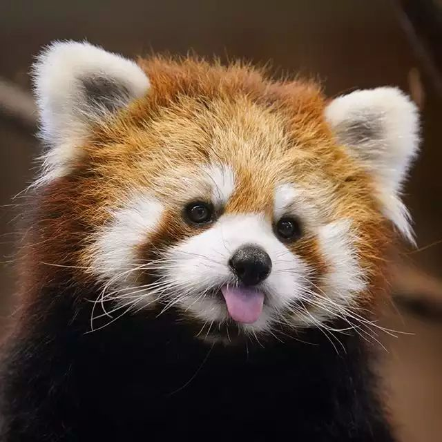

Red Pandas are the cutest animal
But they are imposters

They are known as the "lesser panda" although they are not nearly related to real pandas!
They are also not even bears! Although they look like raccoons, their DNA
placed them in their own family, called Ailuridae.
3 Fun Facts:
- They spend 2/3rds of their day sleeping.
- They quack like a duck.
- They glow in the dark
More cute facts:
- They sleep on their tails.
- They have 6 toes
- They hibernate in the winter
All about Red Pandas